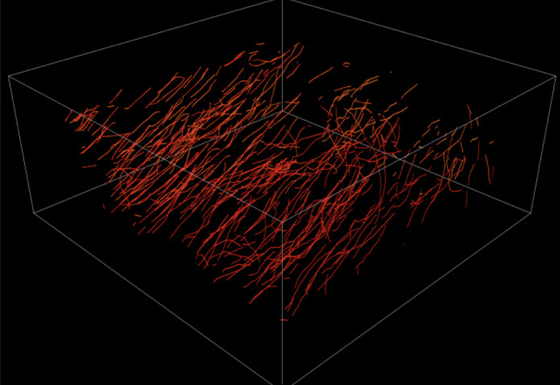
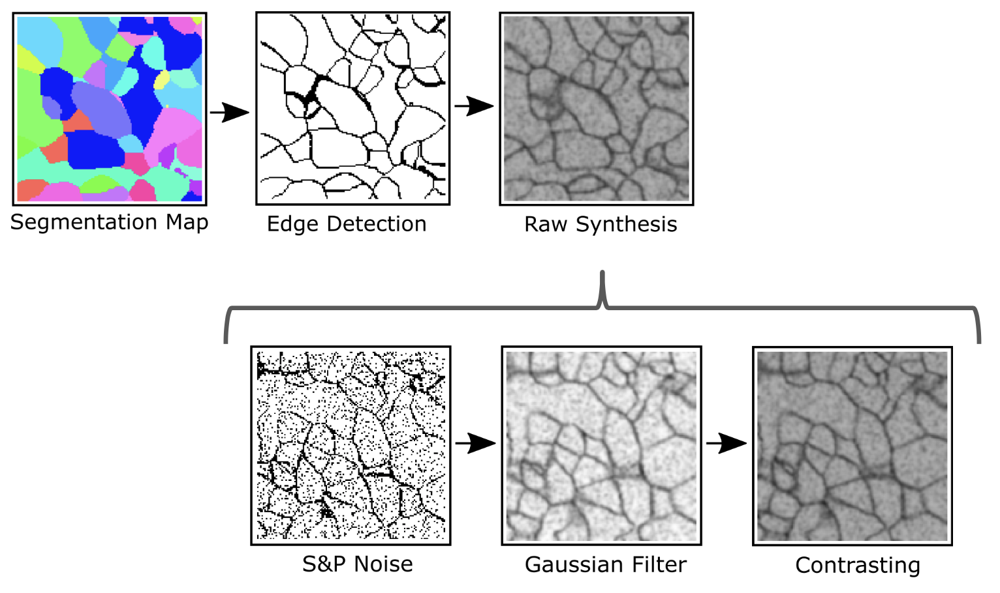
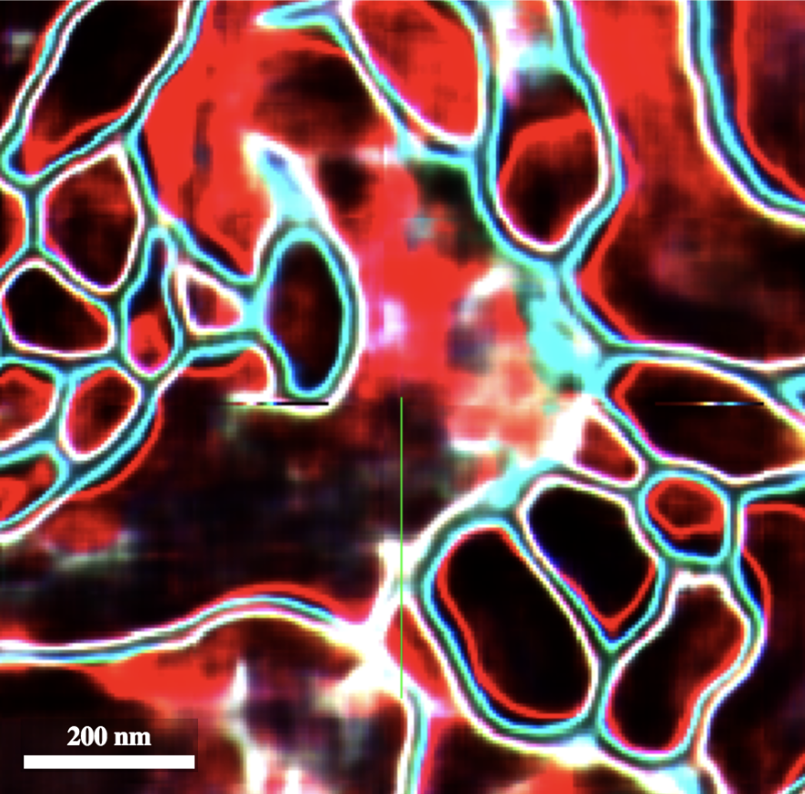
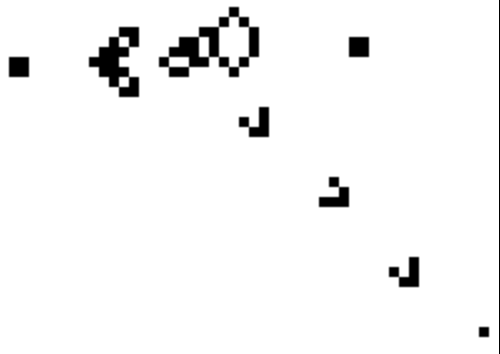
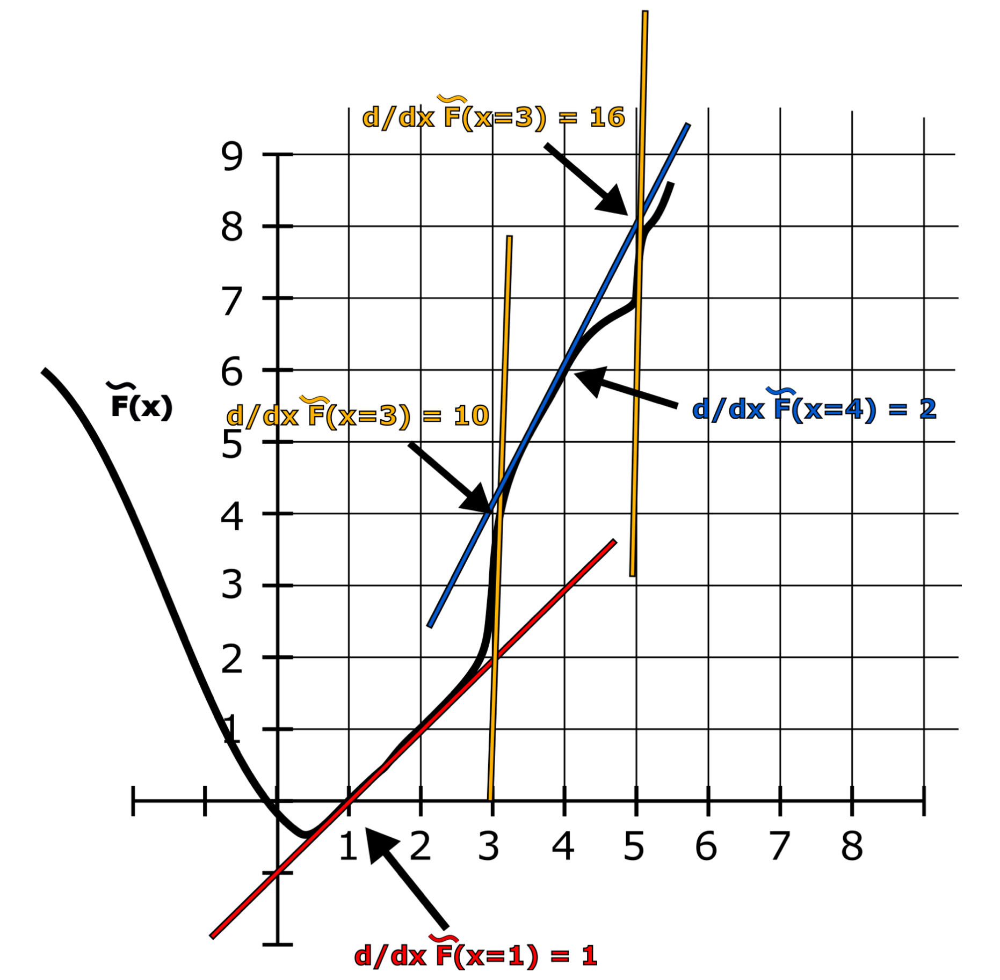
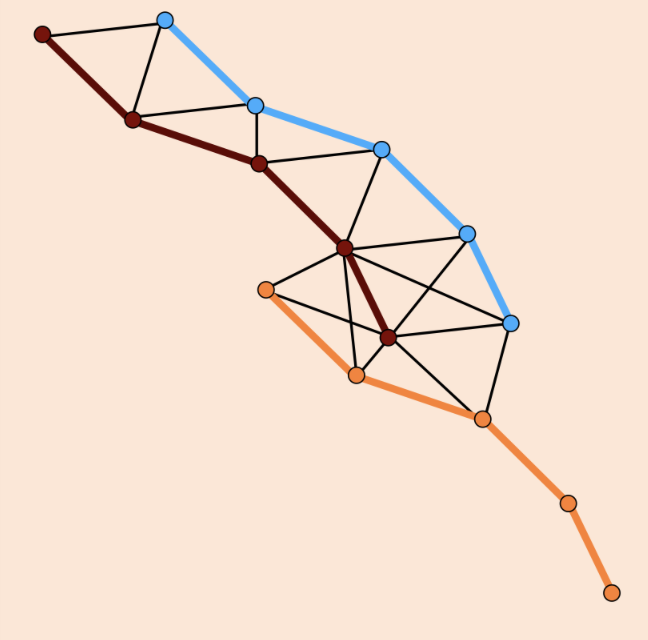
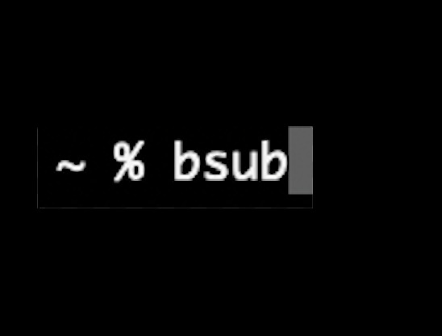
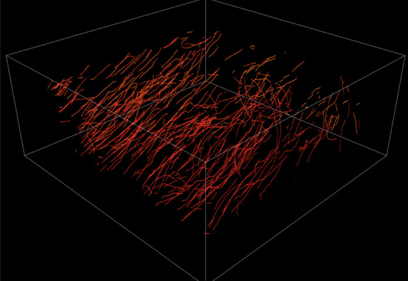

Nils Eckstein
Machine Learning Research Scientist
CV
Contact
About Me
Hi, I am Nils. I am a machine learning researcher at ETH Zurich and HHMI Janelia Research Campus. I am currently in the last stage of my PhD studies where I work on the development of computer vision algorithms for the analysis of large scale biological image datasets, in particular the recently imaged fruit fly brain (zoom in to see individual neurons, mitochondria and other structures). Before becoming fascinated by the brain, I studied physics and worked on simulating the supermassive active black holes in the center of galaxies. Besides that I like to make music, dabble in generative art, and think about how to become immortal. I believe that we might be the last generation of humans that still have to die. Depressing, right? Maybe we should strive to be more like these guys. Please reach out to me if you want to discuss any of the above or just to say hi!
Projects
Microtubule Tracking in large scale EM datasets

A method and library for automatic tracking of microtubules in terabyte
scale EM datasets. This is made possible by combining deep learning
and discrete optimisation, exploiting priors on microtubule structure. We managed to increase tracking accuracy by more than 50% and propose a highly efficient ILP formulation that leads to 4 orders of magnitude faster solve times compared to a naive encoding. Code.
Cycle constrained feature attribution
 We are currently exploring alternative methods for interpreting the deep neural networks we trained for neurotransmitter classification. We hope to be able to extract the relevant features that are responsible for determining the neurotransmitter identity from a given image volume of a presynaptic site. Classical attribution methods do not seem to be sufficient and here we utilize cycle GANs to translate between neurotransmitter classes for hypothesis generation.
We are currently exploring alternative methods for interpreting the deep neural networks we trained for neurotransmitter classification. We hope to be able to extract the relevant features that are responsible for determining the neurotransmitter identity from a given image volume of a presynaptic site. Classical attribution methods do not seem to be sufficient and here we utilize cycle GANs to translate between neurotransmitter classes for hypothesis generation.
Neuron segmentation toy data generator

A library to generate fake skeletons, segmentations and raw electron microscopy data.
Uncertainty prediction for affinity graphs

Even though neuron segmentation at scale is automated by now, generating a connectome still requires large investment in proofreading these segmentations. In an ideal world we could skip this step and instead propagate uncertainties from the segmentation to the wiring diagram. For that we would first need a way to estimate uncertainty in segmentations. This project tried to do just that by designing a bayesian 3D UNet following Kendall and Gal to predict uncertainties for affinity graphs. However, sampling segmentation hypotheses from these predictions rarely led to meaningful structural variations. Follow up experiments with CVAEs showed similar issues and my current best bet is that a different output representation than affinity graphs is needed for this task.
Reverse game of life

For this website I was interested in picking a start state for the game of life that eventually converges to a message or an image. Unfortunately the game of life is irreversible as information is destroyed constantly. However, we can still search for pre-images of a given state that will lead to the given state after one step of evolution. This library utilizes integer linear programming to find a valid pre-image of a given game of life state.
A strange model of computation - Integer Gradient Descent

An esoteric model of computation that can be understood as a generalization of FRACTRANs and used to formulate an analytical version of the Collatz conjecture. It is also Turing complete.
Comatch - Graph matching minimizing topological errors

This library implements a bi-partite graph matching algorithm that minimizes component merge and split error.
Pysub - Python wrapper for bsub

Python wrapper for submitting jobs to a cluster with the option to do so in a container environment.
Art
Curious Things
About Me
Hi, I am Nils. I am a machine learning researcher at ETH Zurich and HHMI Janelia Research Campus. I am currently in the last stage of my PhD studies where I work on the development of computer vision algorithms for the analysis of large scale biological image datasets, in particular the recently imaged fruit fly brain (zoom in to see individual neurons, mitochondria and other structures). Before becoming fascinated by the brain, I studied physics and worked on simulating the supermassive active black holes in the center of galaxies. Besides that I like to make music, dabble in generative art, and think about how to become immortal. I believe that we might be the last generation of humans that still have to die. Depressing, right? Maybe we should strive to be more like these guys. Please reach out to me if you want to discuss any of the above or just to say hi!
Projects
Microtubule Tracking in large scale EM datasets
Cycle constrained feature attribution